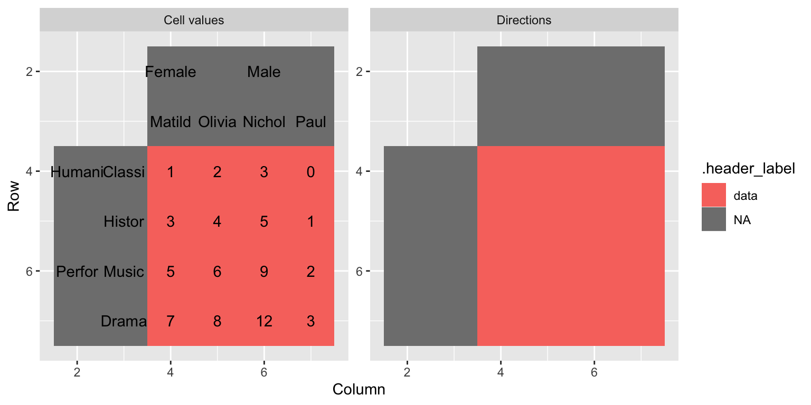
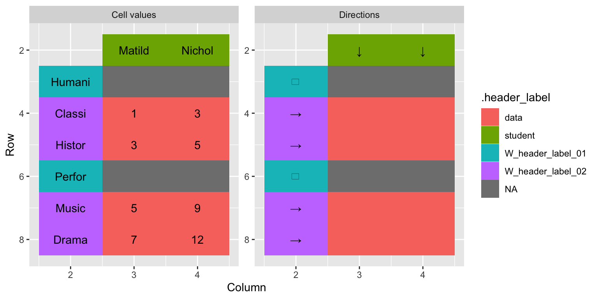
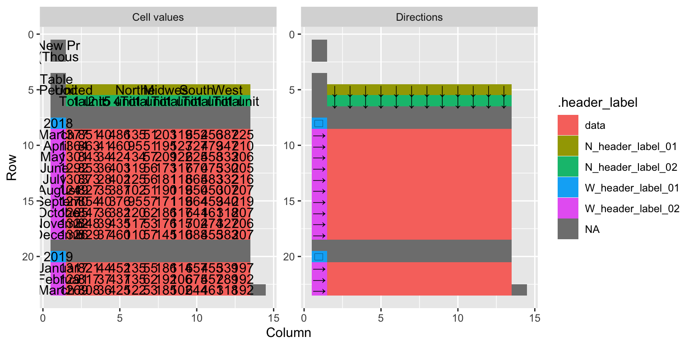

Tidying with locatr locate functions
Ian Moran
2020-06-08
Source:vignettes/locate-workflow.Rmd
locate-workflow.RmdThe locate functions work much like unpivotr::behead. The key difference is that, rather than progressively removing headers, locate functions annotate the tidyxl data frame with .direction, .header_group and .value columns, leaving reshaping to a final function call.
Minimal example : locate
Here’s a minimal example involving a table with two row headers and two column headers.

The first step is to locate the data cells with the locate_data function. Calling locate_data and providing an expression that filters for data cells sends these cells to an attribute named data_cells.
locatr_example("worked-examples.xlsx") %>% xlsx_cells_fmt(sheets = "pivot-annotations") %>% locate_data(data_type == "numeric") %>% attr("data_cells")
## # A tibble: 16 x 24
## .value .direction .header_label address row col data_type character
## <chr> <chr> <chr> <chr> <int> <int> <chr> <chr>
## 1 1 <NA> <NA> D4 4 4 numeric <NA>
## 2 2 <NA> <NA> E4 4 5 numeric <NA>
## 3 3 <NA> <NA> F4 4 6 numeric <NA>
## 4 0 <NA> <NA> G4 4 7 numeric <NA>
## 5 3 <NA> <NA> D5 5 4 numeric <NA>
## 6 4 <NA> <NA> E5 5 5 numeric <NA>
## 7 5 <NA> <NA> F5 5 6 numeric <NA>
## 8 1 <NA> <NA> G5 5 7 numeric <NA>
## 9 5 <NA> <NA> D6 6 4 numeric <NA>
## 10 6 <NA> <NA> E6 6 5 numeric <NA>
## 11 9 <NA> <NA> F6 6 6 numeric <NA>
## 12 2 <NA> <NA> G6 6 7 numeric <NA>
## 13 7 <NA> <NA> D7 7 4 numeric <NA>
## 14 8 <NA> <NA> E7 7 5 numeric <NA>
## 15 12 <NA> <NA> F7 7 6 numeric <NA>
## 16 3 <NA> <NA> G7 7 7 numeric <NA>
## # … with 16 more variables: numeric <dbl>, date <dttm>, logical <lgl>,
## # error <chr>, is_blank <lgl>, local_format_id <int>, sheet <chr>,
## # character_formatted <list>, formula <chr>, is_array <lgl>,
## # formula_ref <chr>, formula_group <int>, comment <chr>, height <dbl>,
## # width <dbl>, style_format <chr>plot_cells produces a plot that indicates which cells are now labelled as data.
locatr_example("worked-examples.xlsx") %>% xlsx_cells_fmt(sheets = "pivot-annotations") %>% locate_data(data_type == "numeric") %>% plot_cells()

Once the data cells are identified, we can add header information to the tidyxl data frame (including .direction, .header_group and .value columns) using the locate function. This function requires direction and variable names. Again, plot_cells can be called to check that data cells have been identified correctly.
Once all header have directions and names, migrate reshapes the tidyxl data frame into a tidy structure.
The gif below illustrate how direction informations is progressively added to the data frame.

And below is the code used in the gif.
locatr::locatr_example("worked-examples.xlsx") %>% xlsx_cells_fmt(sheets = "pivot-annotations") %>% locate_data(data_type == "numeric") %>% locate(direction = "WNW", name = subject_type) %>% locate(direction = "W", name = subject) %>% locate(direction = "NNW", name = gender) %>% locate(direction = "N", name = name) %>% migrate()
## # A tibble: 16 x 7
## row col .value gender name subject_type subject
## <int> <int> <chr> <chr> <chr> <chr> <chr>
## 1 4 4 1 Female Matilda Humanities Classics
## 2 4 5 2 Female Olivia Humanities Classics
## 3 5 4 3 Female Matilda Humanities History
## 4 5 5 4 Female Olivia Humanities History
## 5 6 4 5 Female Matilda Performance Music
## 6 6 5 6 Female Olivia Performance Music
## 7 7 4 7 Female Matilda Performance Drama
## 8 7 5 8 Female Olivia Performance Drama
## 9 4 6 3 Male Nicholas Humanities Classics
## 10 4 7 0 Male Paul Humanities Classics
## 11 5 6 5 Male Nicholas Humanities History
## 12 5 7 1 Male Paul Humanities History
## 13 6 6 9 Male Nicholas Performance Music
## 14 6 7 2 Male Paul Performance Music
## 15 7 6 12 Male Nicholas Performance Drama
## 16 7 7 3 Male Paul Performance Drama
Conditional headers : locate_if
Sometimes not all headers in the same column or row belong to the same group. For example, in the table below, the row headers in column B represent a mix of subject type and subject name.

To deal with this we create a variable that represents the indenting of cells, and then use locate_if to selectively associate cells with directions and header groups.
locatr_example("worked-examples.xlsx") %>% xlsx_cells_fmt(sheets = "pivot-hierarchy") %>% append_fmt(fmt_alignment_indent) %>% locate_data(data_type == "numeric") %>% locate_if(fmt_alignment_indent == 0, direction = "WNW", name = subject_type) %>% locate_if(fmt_alignment_indent == 1, direction = "W", name = subject) %>% locate(direction = "N", name = student) %>% migrate()
## # A tibble: 8 x 6
## row col .value student subject_type subject
## <int> <int> <chr> <chr> <chr> <chr>
## 1 4 3 1 Matilda Humanities Classics
## 2 4 4 3 Nicholas Humanities Classics
## 3 5 3 3 Matilda Humanities History
## 4 5 4 5 Nicholas Humanities History
## 5 7 3 5 Matilda Performance Music
## 6 7 4 9 Nicholas Performance Music
## 7 8 3 7 Matilda Performance Drama
## 8 8 4 12 Nicholas Performance Drama
A more concise syntax : locate_groups
We can deal with multiple headers differentiated by formatting more concisely using locate_groups. The .grouping argument allows us to indicate which formats differentiate headers. In this case, hierarchy is indicated by indenting, which can be accessed with the fmt_alignment_indent function. The .hook_if argument receives an expression with hook that indicates which header_groups are “WNW” rather than “N”. The .hook_if_rev argument will switch directions from “N” to “WSW”. Importantly the hook expression is passed into summarise so it needs to reduce columns to a single boolean value. This is the reason for using any in the example below.
locatr_example("worked-examples.xlsx") %>% xlsx_cells_fmt(sheets = "pivot-hierarchy") %>% append_fmt(fmt_alignment_indent) %>% locate_data(data_type == "numeric") %>% locate_groups(direction = "W", .groupings = groupings(fmt_alignment_indent), .hook_if = hook_if(any(fmt_alignment_indent == 0))) %>% locate(direction = "N", name = student) %>% plot_cells()

To browse different aspects of formatting on which to separate headers, type fmt_ and tab
A more complicated example: Tidying new residential construction data from the US Census Bureau
Here’s a more complicate table.
We can tidy this table by:
- filtering to include only the upper table (filtering out any cells below the first containing “RSE”)
- locating the data, preventing the inclusion of the cells containing 2018 and 2019 in column 1
- differentiating row groups based on whether they are numeric cells
- identifying column headers, using the
header_fillargument to deal with merged cells.
annotated_df <- locatr_example("newresconst.xlsx") %>% xlsx_cells_fmt(sheets = "Table 1 - Permits") %>% append_fmt(fmt_font_bold) %>% filter_fmt(row < min(row[str_detect(character,"RSE")],na.rm = TRUE)) %>% locate_data(data_type == "numeric" & col > 1) %>% locate_groups(direction = "W", .groupings = groupings(is.na(numeric)), .hook_if = hook_if(any(data_type == "numeric"))) %>% locate_groups(direction = "N", header_fill = "style") annotated_df %>% plot_cells()

annotated_df %>% migrate()
## # A tibble: 156 x 7
## row col .value N_header_label_… N_header_label_… W_header_label_…
## <int> <int> <chr> <chr> <chr> <chr>
## 1 9 2 1377 United States "Total" 2018
## 2 9 3 851 United States "1 unit" 2018
## 3 9 4 40 United States "2 to 4 units" 2018
## 4 9 5 486 United States "5 units\r\n or… 2018
## 5 9 6 135 Northeast "Total" 2018
## 6 9 7 51 Northeast "1 unit" 2018
## 7 9 8 203 Midwest "Total" 2018
## 8 9 9 119 Midwest "1 unit" 2018
## 9 9 10 652 South "Total" 2018
## 10 9 11 456 South "1 unit" 2018
## # … with 146 more rows, and 1 more variable: W_header_label_02 <chr>